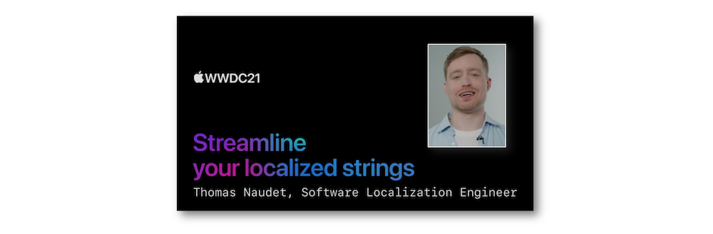

WWDC 2021: Streamline your localized strings
Find hereafter a detailed summary of the above named video which belongs to a taxonomy of some WWDC footages.
The original video is available on the official Apple website (session 10221).

"When you localize the text within your app, you can help make your app more accessible to a worldwide audience. Discover best practices for building your localization workflow, including how to write and format strings accurately, and learn how to prepare strings for localization in different languages using Xcode."
After introducing the localization process from a developer outlook...
... the various contents of this speech are precisely detailed:
Most of the illustrations are parts of the Apple presentations and may be available at the Resources section inside the Overview sheet of each video.
Hereafter, the underlined elements lead directly to the playback of the WWDC video at the appropriate moment.
User interface #
Whatever the language, any string defined for the user interface can be now localized more easily.
Each element presented in the interface is localizable by default with the same mock features embedded in the previews.
The use of variables doesn't need specific format regarding the localization.
On this point, some caveats are highlighted dealing with the String(format:) function...
... and the utilization of string interpolation that are definitely not made for localization.
Regardless of the interest that may be attached to a string, it's strongly recommended to add a dedicated comment to understand the context and the goal of this element.
Some pieces of advice are provided to achieve the most precise goal possible.
Organize your targets #
Various operations under Xcode are exposed to improve the implementation of the localization.
And finally, some reminders are delivered to fulfil a complete use of the localization.
A more detailed organization in the strings translation can optionally be set up in dedicated files named tables...
... one example of which is clearly introduced to make this feature immediately usable.
A bundle parameter allows loading strings across targets.
A short but efficient example is explained in details to show how an implementation of this notion can be made.
Generate all strings #
The files containing all the translations are automatically created by Xcode.
This Xcode feature supplies many captivating aspects to ease the generation of various items.
It's now possible to work the translations readily inside the IDE.
Continuous integration may also be involved in this process when the translated strings catalogs are sent back while joining them in an automatic procedure.
Advanced formatting #
Formatting and localization are now closely linked more than ever thanks to the introduction of the Markdown syntax within the string itself.
A stringsdict file is the best way to follow when language plurals are necessary to provide a perfect localization of strings.
This property list is available directly in an Xcode template where these rules can be defined.

Besides the plural rules, the cases of numbers within a string are also taken into account by the stringsdict file.
And finally, it's now possible to word a localized attributed string for which plural will be adapted at runtime thanks to the inflect attribute with no stringsdict file.
Besides the gender and the pluralization, it's now possible to take into account the user’s preferred term of address in apps.
Instead of hardcoding the data formatting, it's better to let the frameworks do the job because they encompass various types of data regarding their displays.